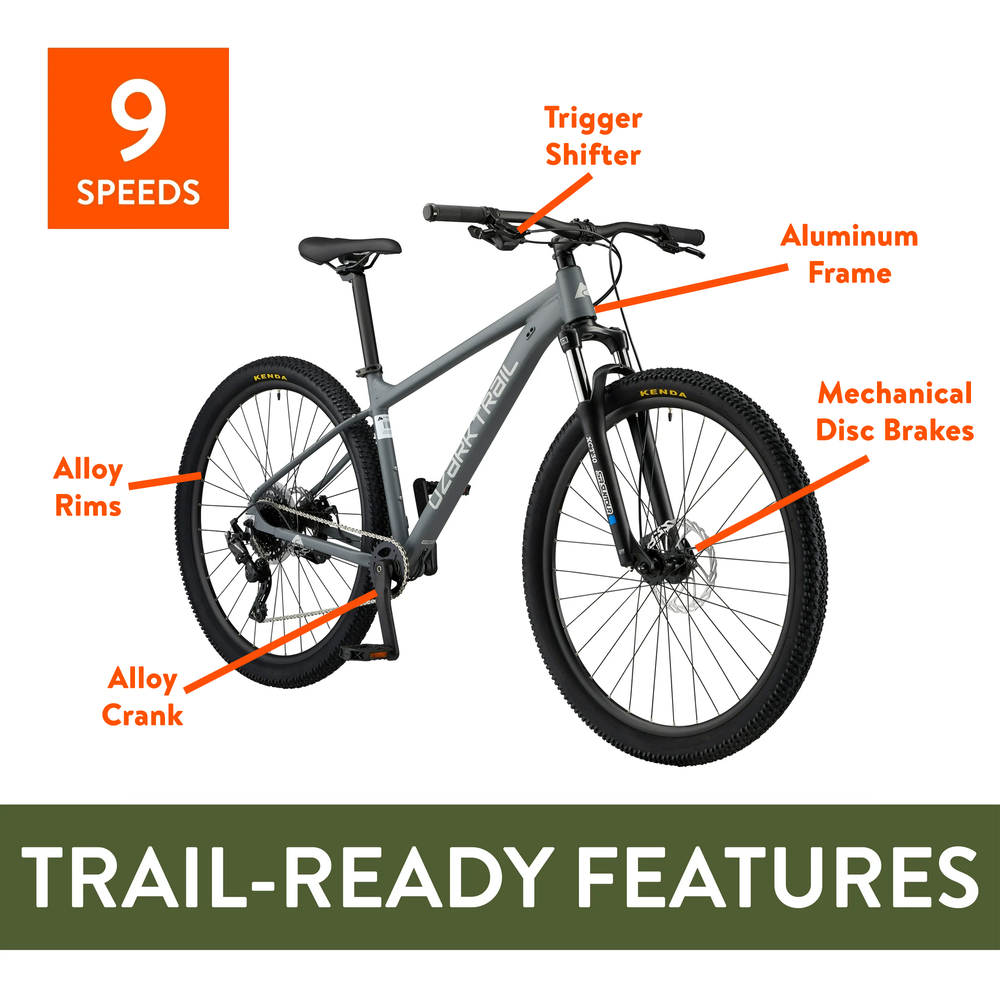

Overview
The Ozark Trail Mountain Bike from Walmart is a budget-friendly option for beginners and casual riders looking for an affordable way to explore trails and outdoor adventures. While it may not compete with higher-end bikes, it offers decent features for its price point.

Pros and Cons
Pros
- Affordable price
- Sturdy frame suitable for light trail use
- Comes with basic suspension for comfort
- Great for beginners and casual riders
- Available at most Walmart stores
Cons
- Limited durability for advanced trails
- Heavier than higher-end mountain bikes
- Basic components may require upgrades
- Assembly might need adjustments
- Not suitable for professional riders